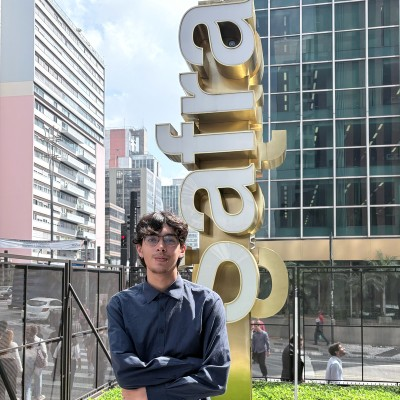

01
Automação com Python
Automação de planilhas, documentos, rotinas administrativas e processos repetitivos.
Sou Rodrigo Campos, Analista Júnior de AI & Analytics e estudante de Ciência da Computação na FIAP. Desenvolvo automações com Python, integrações de IA e APIs, processamento de documentos e soluções orientadas a dados.

Meu foco é transformar processos repetitivos e dados dispersos em soluções simples, confiáveis e fáceis de manter.
Atuo profissionalmente com AI & Analytics no Banco Safra, trabalhando com automação, adoção de Inteligência Artificial e soluções orientadas a dados.
Minha experiência inclui Python, JavaScript, SQL, APIs, modelos de linguagem, pipelines de ingestão, datamarts e automação operacional. Em projetos próprios, exploro processamento de documentos, áudio e vídeo, aplicações web e mobile.
Atualmente também venho ampliando minha base em C# e desenvolvimento de software.
Automação e software com foco em ganho de eficiência, integração e uso prático de Inteligência Artificial.
Automação de planilhas, documentos, rotinas administrativas e processos repetitivos.
Integrações com modelos de linguagem, classificação, sumarização e ferramentas internas.
APIs REST, webhooks e conexão entre sistemas e serviços.
Extração, interpretação, tradução e tratamento automatizado de PDFs e documentos.
Tratamento, transformação, análise e organização de dados com Python e SQL.
Backends, ferramentas internas, dashboards e aplicações integradas a APIs.
Quatro projetos que mostram automação, IA aplicada, integrações, backend, processamento de documentos e desenvolvimento de aplicações.
Assistente que coleta oportunidades freelance públicas, remove duplicidades, classifica oportunidades com IA e envia as melhores ao Telegram para aprovação, com fluxo seguro de propostas via Gmail.
Pipeline para extração, interpretação, tradução e tratamento de documentos PDF, com fallback de OCR para arquivos digitalizados.
Aplicação para transcrição, tradução, geração de legendas e dublagem automática de vídeos.
Aplicação de monitoramento operacional com dashboards, alertas, telemetria e estrutura preparada para análise inteligente de eventos.
Desenvolvimento técnico combinado com experiência prática em automação, IA e dados no ambiente corporativo.
Desenvolvimento de soluções de automação e IA, integrações com modelos de linguagem e apoio à adoção de Inteligência Artificial em processos corporativos.
Desenvolvimento de automações com Python e LLMs, além de suporte a pipelines de ingestão e datamarts.
Automação de processos, análise de dados e desenvolvimento de soluções para redução de tarefas manuais.
FIAP · 2025 — 2029 · Em andamento
ETEC Irmã Agostina · 2022 — 2024
Estou disponível para projetos freelance envolvendo Python, IA, APIs, processamento de documentos, dados e automação.